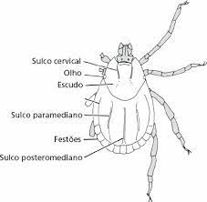

Características Adaptativas
Reino: Animalia
Filo: Artrópodes
Classe: Arachnida
Ordem: Ixodida
Família: Ixodidae
Gênero: Amblymma
A distribuição do A. cajennense está quase restrita a áreas com clima equatorial, que geralmente coincide com o bioma Amazônia.
Adaptações para viver
Os carrapatos, geralmente, têm a forma oval e quando em jejum são planos no sentido dorso-ventral, porém após se alimentarem ficam
convexos e até esféricos. Sua carapaça é composta por quitina, na forma de um exoesqueleto, bem resistente e firme em relação a sua
pouca espessura. Existem espécies a partir de 0,25 mm de diâmetro. Vivem em touceiras, capim, no chão, em climas úmidos ou secos.
Obtenção de alimento
Alimentam-se do sangue dos animais e seres humanos, sendo por isso considerado hematófago e um dos principais vetores de vírus,
bactérias (especialmente as riquétsias) e protozoários, que transmitem doenças ao homem e animais. Apresentam sistema digestório
completo, ou seja, se inicia na boca, com a captura de alimento, e termina com as excretas sendo liberadas pelo ânus.
Características Biológicas

Locomoção
Esses artrópodes são extremamente numerosos e encontrados nos mais variados habitats. Possuem segmentos fundidos, sem asas e antenas,
e números de patas que variam de 3 pares (larva) a 4 pares (adulto). No grupo dos acarinos, encontram-se os carrapatos e os ácaros.
Sistemas do corpo
Sistema respiratório - O sistema respiratório dos carrapatos de forma geral é do tipo traqueal, ou seja, onde a troca gasosa
ocorre através das traqueias.
Sistema circulatório - Os artropodes de forma geral apresentam o sistema circulatório aberto, ou seja,sangue, chamado de hemolinfa,
não circula dentro dos vasos sanguíneos, mas sim em espaços do corpo do animal. Esse sangue não transporta oxigênio e gases, mas
apenas nutrientes, e portanto, não há presença de hemoglobina.
Sistema nervoso- O sistema nervoso dos artrópodes é do tipo ganglionar, apresentando uma dupla cadeia ventral de gânglios, e órgãos
dos sentidos muito especializados situados na cabeça (olhos, órgãos auditivos e antenas). Essa maior concentração na cabeça das
estruturas nervosas é conhecida como cefalização.
Comportamento

Estratégias de defesa
Uma estratégia de defesa é que eles se prendem em seus hospedeiros com “garrinhas” na boca, assim sendo difícil sua retirada.
Hospedeiros
A capivara é um hospedeiro habitual de carrapatos estrela: chega-se a encontrar de centenas a milhares desses parasitas em um único
animal. A febre maculosa é transmitida aos seres humanos pela picada do carrapato estrela infectado com riquétsia.
Os hospedeiros preferidos são os equídeos, mas pode também parasitar bovinos, outros animais domésticos e animais silvestres.
Contaminação e prevenção
A transmissão ocorre através da picada do carrapato estrela contaminado com a bactéria Rickettsia rickettsii. Ao picar e se
alimentar do sangue, o carrapato transmite a bactéria através de sua saliva.
Reprodução
Larvas e ninfas se mostraram presentes o ano todo na vegetação e apresentaram
picos populacionais nos dois semestres do período estudado.
Após ingerir sangue de um hospedeiro, a fêmea se desprende do mesmo e deposita milhares de ovos, geralmente no ambiente, morrendo em
seguida. Em condições satisfatórias de temperatura e umidade, ocorre a incubação (entre 30 a 40 dias, aproximadamente) e, após este
período, as larvas eclodem.